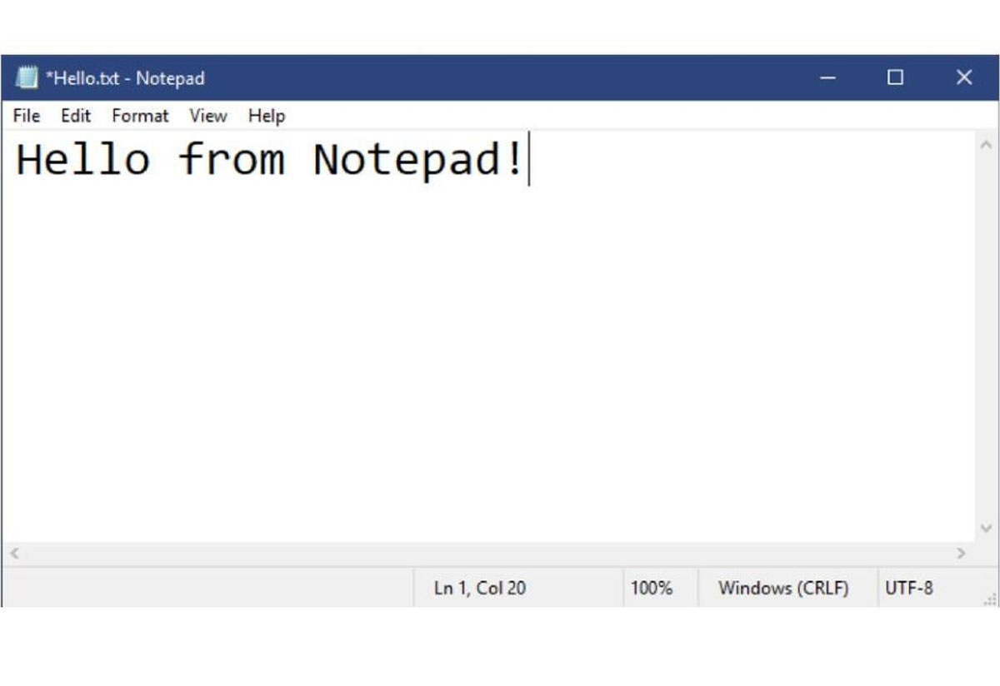

Técnicas de Programação
Linguagem de Programação
A linguagem de programação é utilizada especificamente para cada tipo de utilização, ou seja, estas linguagens tem como objetivo interigir máquina "Computador" e usuário, e são elas as responsáveis por enviar algoritimos ao computador durante a interação do usuário com a maquina "Computador" para assi ele executar as tarefas.Paradigmas de Programação
Os Paradgmas de Programação se diz respeito a cada linguam de programação ou seja, quando vamos desenvolver um sistemas ou até mesmo um site, o Paradigma de Programação nos ajuda como estruturar um determinado sistema e qual a opção de código usar para esse sistemas seja ele lógico, orintado a objeto ou Linguagem de Marcação de Hipertexto (HTML)Usabilidade
A usabilidade em um Sistema ou Site nada mais é que construir cada um deles de maneira que fica fácil a interação com o usuário, no caso um sistema ou site fácil de ser entendido, de fácil navegação, assim o usuário tem facilidade em usar e conforto ao usar e não a sensação de estar em um beco sem saída.Ferramentas de Desenvolvimento

Editor de Texto
Temos o editor de texto, ele é simples, é possivel programas com ele, só que ele não identifica a linguagem sendo programada, ai a escrita dele fica simples e mais trabalhoso de se encontrar onde tem algum possivel erro dentro do código
Editor de Códigos
Ao contrário do editor de texto, o editor de códogo é comtivel com muitas linguagens de programação desta forma, ele consegue decifrar a linguagem sendo programada e fazendo marcações com cores doferentes como o exemplor da imagem ao lado, facilitando o programador na hora de uma possível manutenção no sistema.Frameworks
Os frameworks são um conjunto de ferramentas de códigos prontos para ser aplicado dentro de um desenvolvimento, temos um exemplo muito usado que é o Bootstrap.